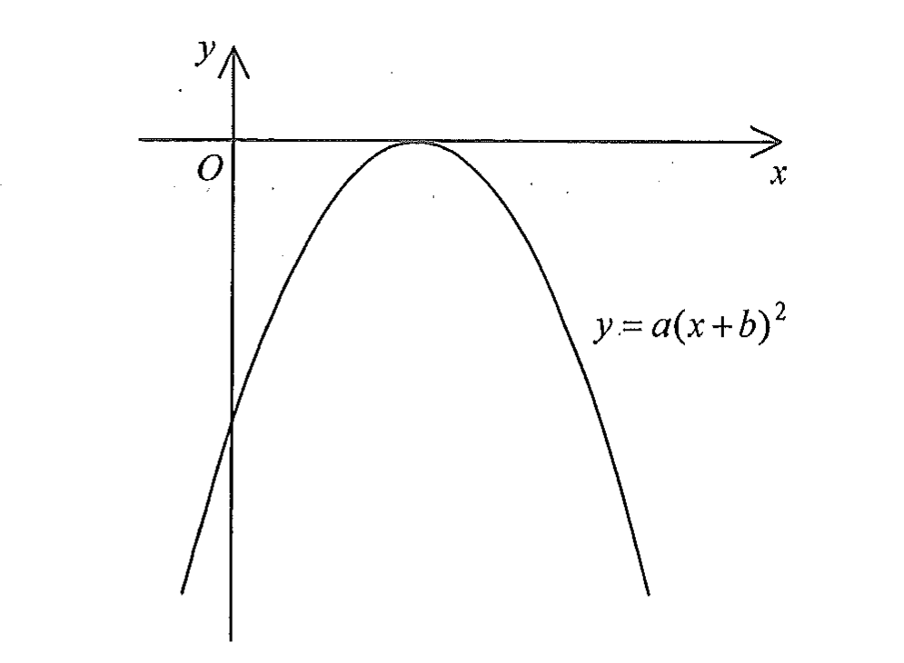

DSE 2012 · 卷二 · Q6
二次函數圖像
題目
圖中所示為 $y=a(x+b)^{2}$ 的圖像，其中 $a$ 及 $b$ 均為常數。下列何者正確？
A
$a>0$ 及 $b>0$
B
$a>0$ 及 $b<0$
C
$a<0$ 及 $b>0$
D
$a<0$ 及 $b<0$

圖（原卷附圖）
題解
第 1 步
由開口方向決定 $a$ 的正負
開口方向
\(y=a(x-h)^{2}+k\)
$a$ 是控制開口方向的參數：$a>0$ 開口向上，$a<0$ 開口向下。
圖中的拋物線開口向下，所以 \[ a<0. \] （若 $a>0$，
圖像應在 $x$ 軸上方、開口向上。
）
第 2 步
由頂點位置決定 $b$ 的正負
頂點坐標
\((-b,\,0)\)
$y=a(x+b)^{2}$ 的頂點是 $(-b,\,0)$，即 $a(x-h)^{2}+k$ 中 $h=-b$、$k=0$。
圖中曲線只在 $x$ 軸上「觸碰」一點，該點就是頂點，
而且它在 $y$ 軸的右方，即頂點的 $x$ 坐標為正： \[ -b>0\;\Longrightarrow\;b<0. \]
第 3 步
用 $y$ 截距覆核
令 $x=0$：$y=a(0+b)^{2}=ab^{2}$。
因為 $a<0$ 而 $b^{2}>0$，所以 $y$ 截距為負值。
圖中曲線與 $y$ 軸的交點確實在原點 $O$ 之下，與 $a<0$、$b<0$ 完全吻合。
對照選項，答案為
D
。
答案
D
（$a<0$ 且 $b<0$）
練習
同類新題
題目.
若 $a>0$ 且 $b<0$，則 $y=a(x+b)^{2}$ 的圖像的頂點位於
A
原點
B
$y$ 軸左方
C
$y$ 軸右方
D
$x$ 軸下方
顯示題解
第 1 步.
$y=a(x+b)^{2}$ 的頂點為 $(-b,\,0)$，它恆在 $x$ 軸上。
第 2 步.
由 $b<0$ 得 $-b>0$，即頂點的 $x$ 坐標為正。
第 3 步.
所以頂點在 $y$ 軸右方的 $x$ 軸上，即答案
C
。
答案：
C
（$y$ 軸右方）
‹ 上一題
目錄
下一題 ›